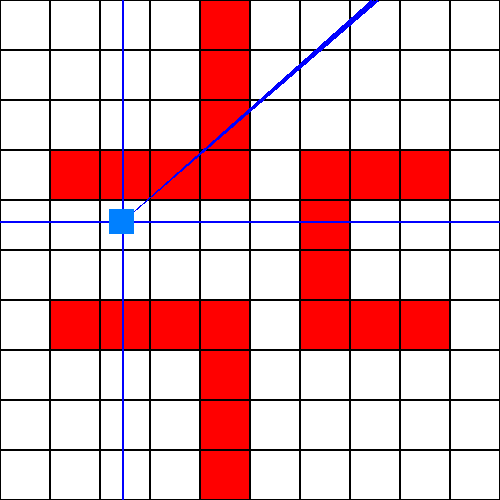
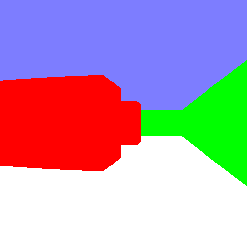

De la 3D avec le Raycast
En général, le rendu d'un jeu vidéo 3D se fait via différentes APIs graphiques, comme OpenGL ou Direct3D. Cependant, ces APIs nécessitent une accélération matériel, via la carte graphique. En effet, elle demande beaucoup de performances, et sont presque irréalisables sans cela. Cependant, comment faire pour afficher de la 3D, sans accélération matérielle ? La technique la plus efficace, utilisée depuis les années 90, est le Raycast.Commencer par... de la 2D
Projeter de la 2D
Nous voulons faire un jeu 3D. Alors, pourquoi donc commencer par de la 2D ? Dans le cas du Raycast, c'est l'un des meilleurs moyens pour comprendre l'idée géénrale de la technique. En effet, le Raycast est, en réalité, une projection en 3D d'un environnement 2D. La première chose à faire est de définire cet environnement.
Pour commencer, nous allons créer une simple map en 2D. Pour des raisons de clareté, nous allons aussi définir un moyen d'afficher cette map de dessus (donc, en 2D pur). Commençon simplement, en disant que les cases blanches sont du vide et les cases rouges des murs. Travaillons sur cette map :

Notre problème ici, pour le rendu 3D, est de savoir comment afficher les éléments de cette map en 3D, avec des performances tolérables. Avec les APIs modernes, la puissance de calcul est suffisante pour afficher tous les éléments 1 par 1, et calculer en temps réel lesquels afficher et ne pas afficher. Dans notre cas, il faudrait générer 22 cases contenant des murs. Sans accélération matérielle, cette étape devient vite très demandante en ressources, et les performances peuvent devenir catastrophique (surtout sur une map plus grande). Il faut donc agir sur l'algorithme pour éviter ce problème.
La transformation que nous allons faire va nous permettre d'économiser des ressources, sans pour autant donner un résultat affreux. L'idée ici est de n'afficher que le strict nécessaire au rendu 3D, et d'éviter d'en afficher trop. Cependant, le problème est de savoir quels objets afficher et lesquels ne pas afficher. C'est la que le Raycast rentre en jeu, puisqu'il s'agit d'une technique permettant de faire cela. Nous allons voir quels objets doivent être affichés via la technique de lancer de rayons, ou, traduit en anglais, "Raycast".
Le lancer de rayons
L'idée ici va être de détecter tous les objets à afficher (donc, devant la caméra) grâce à la technique des rayons. Pour cela, nous avons besoin de la map, de la position caméra et de la rotation de la caméra. Avec ces données, nous allons tracer un rayon, qui va nous permettre de savoir quels objets afficher. En marquant la caméra par un point bleu clair et le rayon par une ligne bleu foncé, le lancer ressemble à ça :

Avec ce simple rayon, nous pouvons déjà savoir que le mur touché devra être afficher. Bien évidemment, un seul mur ne suffit pas. En agrandissant le nombre de rayons, et en les rapprochant, nous pouvons définir tout un point de vue, qui représente toute la partie bleu foncé sur cette image :

Le nombre de rayon et leur espacement dépent des besoins du jeu / du joueurs, des capacités de l'ordinateur du joueur, de la taille de la map... Dés que vous avez tous les objets nécessaires, vous pouvez les afficher sur l'écran. Cette étape peut dépendre de beaucoup de choses, et nous en verrons quelques exemples juste après. Mais avant, mettons précisément au point notre algorithme de lancer de rayon.
Créer l'algorithme Raycast
Les bases de l'algorithme
Pour que notre algorithme marche, nous allons devoir poser quelques bases. Premièrement, la map du jeu sera contenu dans une liste à deux dimensions. La première dimension représente la coordonnée Y de la case, et la deuxième dimension la coordonnée X de la case. Définissons ces données comme statiques dans le temps.
L'algorithme aura besoin de deux entrées principales : les coordonnées de la caméra, et l'angle de la caméra. Par définition, l'angle de la caméra représente le "devant" de la caméra, vers où projeter le rayon. Pour des soucis de simplicité mathématique, le départ de l'angle représente la droite partant vers la droite de la caméra. L'algorithme sortira le point de collision entre le premier mur trouvé (ou le fond de la map si aucun mur n'est trouvé) et le rayon. Si on résume, l'algorithme aura comme donnée de départ :
Simuler l'avancée du rayon
Pour simuler l'avancée du rayon, nous allons utiliser les propriétés de notre map cadriller. En effet, à chaque fois que notre rayon va avancer d'une case horizontale, il va avancer d'un certain nombre de cases verticals, que nous appellerons horizontal_ratio. Et, vice versa, à chaque fois que la rayon va avancer d'une case verticale, il va avancer d'un certain nombre de cases horizontales (l'inverse de horizontal_ratio), que nous appellerons vertical_ratio. Grâce à cette propriété, on peut connaître les zones de collisions avec chaque cases devant le rayon, en avançant cases par cases. Pour n'en louper aucune, il faut avancer horizontalement et verticalement aux cases, en prenant en compte que l'avancer peut se faire à sens arrière, selon les orientations du rayon. Les orientations en question seront nommées horizontal_advance et vertical_advance. Nous devrons aussi prendre en compte que la position de départ du rayon n'est pas un nombre entier, mais rationnel, et qu'il faudra passer à la case précédente / suivante pour ne pas décaler le rayon. Si une case contient un mur, on arrête la progression du rayon : il a heurté un mur.
Parler, c'est bien. Cependant, pour avoir tous ses résultats, il va falloir faire un peu de mathématiques. Pour calculer les ratios, il nous faut la valeur de la pente du rayon tracé par l'angle avant pour une case horizontal / vertical parcourue. Pour effectuer ce calcul, nous allons utiliser un peu de trigonométrie, et, plus précisément, nous allons utiliser le cercle trigonométrique. En effet, les propriétés de ce cercle nous disent que nous pouvons obtenir les valeurs précises de la pente du rayon, horizontalement avec le cosinus et verticalement avec le sinus. Pour des raisons de simplicité, nous allons prendre les valeurs absolues dans les calculs. Grâce à cette propriété, une simple division suffit à calculer les ratios, et nous obtenons les valeurs nécessaires :
Après cela, quelques modifications sont nécessaires, pour ne pas avoir cetaines erreurs. Premièrement, si le sinus de l'angle est égal à 0, alors la division pour le ratio vertical peut être faussé. De même, si le cosinus de l'angle est égal à 0, c'est le ratio horizontal qui est faussé. Pour ne pas avoir ce genre de problème, nous devons remplacer le sinus / cosinus par un tout petit nombre (comme 0.000001) dans le calcul. Pour finir, le dernier comportement à prendre en compte est le signe des ratios. Une chose à comprendre est que le signe de l'axe référence (horizontal pour le ratio horizontal et vertical pour le ratio vertical) est présent grâce aux variables advances, donc il n'importe pas ici. Le seul axe qui importe ici est l'autre axe du ratio, puisqu'il doit progresser vers lui. Donc, le signe du ratio vertical représente le signe de l'axe horizontal, et le signe du ratio horizontal représente le signe de l'axe vertical. En termes plus mathématiques, le signe de horizontal_ratio est celui du sinus et celui de vertical_ratio est celui du cosinus.
Maintenant que cela est fait, calculons horizontal_advance et vertical_advance. Pour ces deux variables, deux valeurs sont possibles : 1 ou -1. Si l'angle pointe vers l'avant (donc, que la valeur du cosinus de l'angle est positive), l'avancement horizontal est positif. Sinon, elle est négative. C'est la même chose pour l'avancement vertical, avec la valeur du sinus cette fois ci. Et... c'est tout pour cette valeur. Cependant, elle va nous être utile directement pour la prochaine étape du lancé : avancer la position actuelle du rayon vers une valeur entière. Pour être plus précis, le rayon horizontal doit avancer à la prochaine valeur entièere de X, et le rayon vertical doit avancer à la prochaine valeur entière de Y. Bien que cette étape semble simple, elle nécessite de n'oublier aucune valeur à modifier. La première étape est de calculer ce que l'on appelle "prochaine valeur" (cela compte pour les deux rayons). En effet, si l'avancement est négatif, alors il ne s'agit pas de la prochaine valeur, mais de la dernière valeur. Donc, la valeur précise ici est défini par l'advance du rayon (arrondi vers le bas pour un advance négatif, et arrondi vers le haut pour un advance positif). Maintenant, appliquons le ratio nécessaire. Le calcul est assez simple : on ajoute à la position pas encore modifiée le produit du ratio et de la valeur absolue entre l'ancienne position et la "prochaine" position. Comme ça, votre rayon est bien calibré.
Maintenant, nous pouvons commencer à simuler le parcours du rayon. Nous commençons par voir si la case actuelle du rayon est pleine ou pas. Cependant, attention à ne pas se tromper pour choisir les coordonnées de la case. En effet, si l'advance est négatif, alors la case du rayon est celle sur lequel il est passé, et pas celle qui vise. Donc, la coordonnées sur l'axe du rayon doit être diminué de 1. Cette étape dépend de comment vous découper votre map, mais, généralement, ce problème arrive souvent. Mais, à l'inverse, la coordonnée de l'autre axe représente en général l'arrondi vers le bas de la coordonnée. Si la case est vide, alors on continue, jusqu'à ce que le rayon sort de la map ou touche une autre case avec un mur. Ici, "continuer" veut dire avancer de "advance" sur l'axe du rayon et du "ratio" sur l'autre axe. Dés que les deux rayons ont finis leur parcours, nous devons prendre en résultat final le rayon le plus proche de la caméra. Grâce à cela, vous savez vers quoi tape le rayon.
Passer à la 3D
Différents moyens de faire de la 3D
En théorie, le problème principal des éléments à afficher pour votre rendu est réglé. Cependant, il ne vous reste plus qu'à afficher les objets. Pour être parfaitement honnête, il n'y a pas un moyen de faire ça, mais une immense quantité. Vous pouvez faire du OpenGL like, en les affichant un par un, avec les calculs mathématiques nécessaires. Cependant, ces calculs sont assez complexes, et peuvent changer selon les besoins du jeu. Vous pouvez aussi faire entièrement avec de la perspective / sans perspective. L'avantage de ses systèmes est qu'ils sont très modulables, même si ils sont très complexes. Si vous ne savez pas comment faire exactement, ne vous inquiétez pas, il existe un moyen de faire, n'utilisante que le Raycast.
La perspective 3D via le Raycast
La technique que je vais vous présenter permet de faire un rendu 3D, entièrement avec des rayons (et le théorème de Thalès). Premièrement, il faut adapter l'algorithme à permettre d'avoir la distance du mur touché (en général, ce n'est pas l'adaptation la plus complexe de l'algorithme). Maintenant que cela est fait, créeons une image qui représentera le rendu 3D. L'idée va être de remplir cette image avec le résultat des rayons, en mettant un rayon par pixels pour un affichage fluide. Comment va t-on faire cela ? Comme nous l'avons vu plus haut, nous allons envoyer pleins de rayons proches, qui donnerons chacun un résultat propre. La différence d'angle entre le premier et le dernier angle représente le champ de vision du joueur, aussi appelé FOV du joueur. En suite, attribuons une colonne de pixel par rayon. L'ordre d'attribution est assez important ici : si vous faites comme les rayons présents plus haut, alors l'angle le plus grand (selon le cercle trigonométrique) représente le pixel le plus à gauche de l'écran. Donc, l'angle le plus petit représente le pixel le plus à droite, et les autres pixels sont eux dispersés dans le même ordre. Il est à noter que, si votre ordinateur n'est pas assez pussant, vous pouvez réduire le nombre de rayon, et augmenter la largeur des colonnes proportionellement. Dans chacune de ces colonnes, traçons la vision qu'à le joueur du bloc touché selon le rayon. C'est là que le théorème de Thalès entre en jeu : la hauteur perçu du rayon est proportionnel à sa distance du joueur. Disons qu'une case à 1 case de distance occupe parfaitement toute la colonne, le calcul en devient très simple :
Cette formule nous donne la proportion de la colonne occupée par la case, il faut donc la multiplié par la hauteur de la colonne pour obtenir la valeur totale nécessaire. Pour finir, il faut prendre en compte que la case doit être placé correctement dans la colonne. Pour rester simple et suivre correctement les règles de perspective, disons que la case se trouve pile sur la ligne d'horizon de la caméra, et donc pile au milieu de son champ de vision. En effet, dans notre cas, l'horizon représente le milieu de l'image. Donc, la position y de la colonne se note :
Ce résultat est encore en pourcentage, et doit donc être multiplié par la hauteur de la colonne pour être utilisable. Définissons la couleur rouge pour les cases pleines, et la couleur verte si le rayon sort de la map. De plus, pour faire plus joli, rajoutant un rectangle bleu dans la moitié supérieure de l'image, pour simuler le ciel. Nous obtenons ce résultat :
Bon, pour l'instant le résultat n'est pas extraordinaire. Cependant, ce n'est pas vraiment la question ici. En effet, cet algorithme (assez simple, disons le) est très facilement modulable et customisable à souhait. D'ailleurs, il l'est tellement qu'il soit fortement probable que, dans votre esprit, les formules décrites plus haut sont formulées autrement (ce qui est une très bonne chose, tant qu'elles marchent) ! Rien que avec ce petit départ, vous pouvez faire des très grande choses, comme tous les jeux vidéos des années 90 l'ont prouvés. De plus, c'est un très bon exercice pour s'améliorer en manipulation d'algorithmes, car ils vous demandent une refléxion particulièrement intense. Maintenant, c'est à vous de jouer, de moduler cet algorithme comme bon vous semble. Pleins d'améliorations sont possibles : textures (en dessinant mieux sur la colonne allouée aux cases), meilleure gestion de la hauteur (en jouant sur les formules vues plus haut)... Essayez de faire ce qui vous semble le plus intéressant, et de pondre le prochain AAA qui inondera Internet !